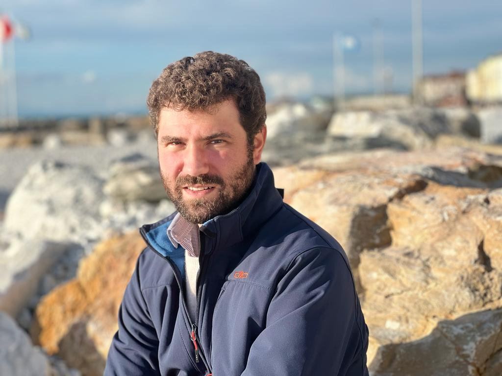

Andrea Lazzarini

I am Assistant Professor (RTD/B) of Italian Literature at the DIRAAS (Department of Italian Studies, Romance Studies, Ancient Studies, Arts, and Entertainment) of the University of Genoa. In 2020-2021 I was Premier Assistant at the Section d’Italien of the University of Lausanne, and holder of the Praloran Fellowship (Fondazione Ezio Franceschini – Florence / University of Lausanne). In 2018-2020 I was Research Fellow at the University of Modena and Reggio Emilia. I have also taught courses at the Universities of Pisa and Bologna.
My research activity has concentrated on the 16th, 17th, and 18th centuries, with my main focus on the Italian Seicento. Recently, it has delved into the works of Federico De Roberto (1861-1927) and their connections with fin de siècle positivist culture.